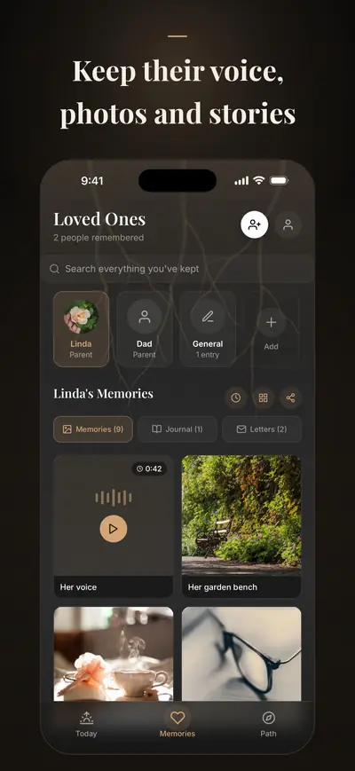
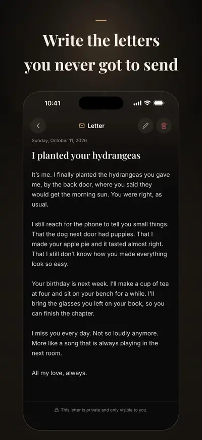
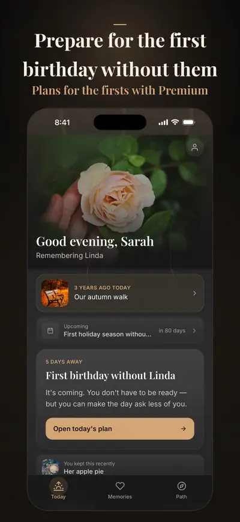

Solace Tree: Grief Journal
Letters, memories & hard days
Solace Tree is a grief journal for the person you lost: keep their photos, voice and stories, write the letters you never got to send, and get ready for the dates that hurt.
For iPhone. Free to start; Premium is optional.



Premium adds plans for the holidays and firsts, on the dates you set, a tribute book, and an encrypted EU copy that comes back on a new iPhone.
It is made for the months after a loss, when everyone expects you to be doing better and you are not. Memories, guided letters, the journal, plans for their birthday and the anniversary of their death, check-ins, breathing and crisis support stay free. Nothing here rushes you or keeps score, and nothing you write is shared unless you choose to.
KEEP THEIR MEMORIES
- Photos, videos and voice recordings, with the stories behind them
- A memory timeline for each person you are remembering
- Everything in one quiet place, instead of scattered across your phone
WRITE TO THEM
- Guided letters, and with Premium deeper letter paths: what you could not say, what you want to thank them for, what you will carry forward
- Gentle reflection prompts for the days words will not come
- A private journal for everything in between
GET READY FOR THE HARD DATES
- Their birthday and the anniversary of their death; with Premium, Mother's Day or Father's Day and the first holidays without them
- Small rituals to lean on: a breath, a memory, a quiet moment; with Premium, a letter, a visit or a candle
- Soft reminders a few days before, so a date does not catch you off guard
TURN MEMORIES INTO KEEPSAKES (PREMIUM OR KEEPSAKE PACK)
- A tribute book, a memory timeline or remembrance cards, ready to print or to keep
- Made on your iPhone from what you have saved
FOR THE HEAVY MOMENTS
- A short daily check-in, with no score and no judgment
- Breathing and grounding exercises for when grief sits in your body
- A 30-day guided program for the first weeks after a loss
- Comfort from faith traditions, if that is part of your life
- A crisis line or emergency help one tap away, for when you need more than an app can give
PRIVATE BY DESIGN
Your memories and writing are kept on your iPhone, and your check-ins, moods and the faith you choose never leave it, even with Premium. There are no ads and no tracking, and nothing you write is shared unless you choose to. With Premium, a copy is kept in a cloud backup in the EU, encrypted in transit and at rest; continue with Apple in Profile, and it comes back on a new iPhone if yours is lost.
PREMIUM
Premium adds:
- Plans for more of the hard dates: holidays, firsts and dates of your own
- Ritual packs with letter, visit and candle rituals
- Deeper writing paths with more letter templates and reflection prompts
- Unlimited loved ones, memories and journal entries
- Keepsake exports: tribute books and memory timelines
- Cloud backup and sync, including 250 MB for photos, videos and voice recordings
Solace Tree is a companion, not a replacement for professional support. Crisis lines and emergency numbers, by country
Available in English, Turkish, German, Spanish, French and Arabic.